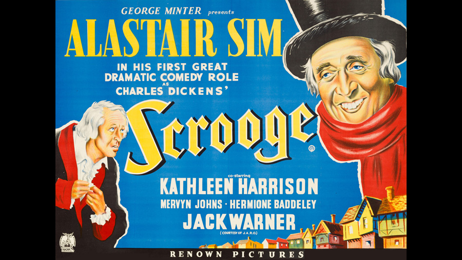

 |
||
 |
1951 |
 |
CAST |
||
|
||
Ebenezer Scrooge |
- |
Alastair Sim |
Bob Cratchit |
- |
Mervyn Johns |
Mrs. Cratchit |
- |
Hermione Baddeley |
Tiny Tim Cratchit |
- |
Glyn Dearman |
Fred (Scrooge's nephew) |
- |
Brian Worth |
Fred's wife |
- |
Olga Edwardes |
Martha Cratchit |
- |
Moiya Kelly (uncredited) |
Belinda Cratchit |
- |
Catherine Leach (uncredited) |
Peter Cratchit |
- |
John Charlesworth |
Marley's Ghost |
- |
Michael Hordern |
Spirit of Christmas Past |
- |
Michael Dolan |
Spirit of Christmas Present |
- |
Francis De Wolff |
Spirit of Christmas Future |
- |
Czeslaw Konarski |
Young Scrooge |
- |
George Cole |
Fan "Fanny" Scrooge |
- |
Carol Marsh |
Mrs. Dilber |
- |
Kathleen Harrison |
Alice |
- |
Rona Anderson |
Old Joe |
- |
Miles Malleson |
The Undertaker |
- |
Ernest Thesiger |
Fezziwig |
- |
Roddy Hughes |
Mrs. Fezziwig |
- |
Hattie Jacques |
Miss Flora |
- |
Eleanor Summerfield |
Laundress |
- |
Louise Hampton |
Mr. Snedrig |
- |
Eliot Makeham |
First Businessman / Narrator |
- |
Peter Bull |
Second Businessman |
- |
Douglas Muir |
First Collector |
- |
Noel Howlett |
Second Collector |
- |
Fred Johnson |
Boy Buying Turkey |
- |
David Hannaford |
Mr. Rosehed |
- |
Henry Hewitt |
Mr. Groper |
- |
Hugh Dempster |
Alice's Patient |
- |
Maire O'Neill |
Mr. Tupper |
- |
Richard Pearson |
Young Jacob Marley |
- |
Patrick MacNee |
Samuel Wilkins |
- |
Clifford Mollison |
Mr. Jorkin |
- |
Jack Warner |
Fred's Maid |
- |
Theresa Derrington |
Old Lady Sitting by Stove At The Charity Hospital |
- |
Vi Kaley (uncredited) |
Mary Cratchit |
- |
Lualle Kemp (uncredited) |
Dancer at Fezziwig's |
- |
Derek Stephens (uncredited) |
Fezziwig's Lad |
- |
Tony Wager (uncredited) |
CREATIVE TEAM |
||
Director |
- |
Brian Desmond-Hurst |
Screenplay |
- |
Noel Langley |
PRODUCTION
|
||
The film expands on the story by detailing Scrooge's rise as a prominent businessman. He was corrupted by a greedy new mentor, Mr. Jorkin (played by Jack Warner, a popular British actor in his time) who lured him away from the benevolent Mr. Fezziwig and also introduced him to Jacob Marley. When Jorkin, who does not appear at all in Dickens's original story, is discovered to be an embezzler, the opportunistic Scrooge and Marley offer to compensate the company's losses on the condition that they receive control of the company for which they work - and so, Scrooge and Marley is born. During the Ghost of Christmas Present sequence, Scrooge's former fiancée, Alice, works with the homeless and sick (the character is named "Belle" in the book, and her employment is not described). The film suggests that Ebenezer's sister died while giving birth to his nephew, Fred, thus causing Scrooge's estrangement from him. We also learn that Ebenezer's mother died while giving birth to him, causing his father to resent him just as Ebenezer resents his nephew. In the book, Fan is much younger than Ebenezer, and the cause of her death is not mentioned. |
||
|
|
|